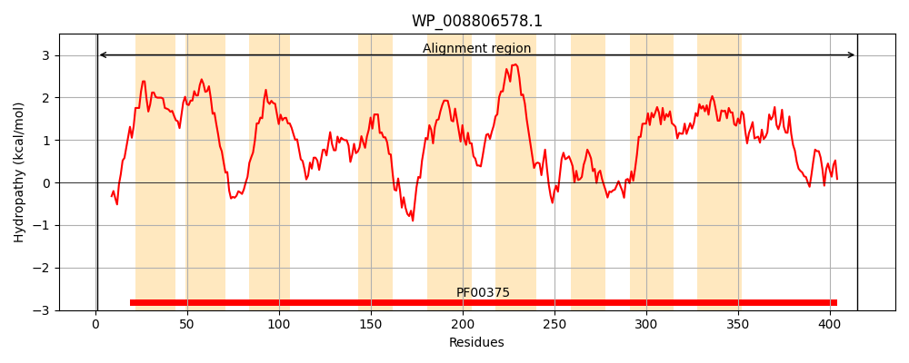
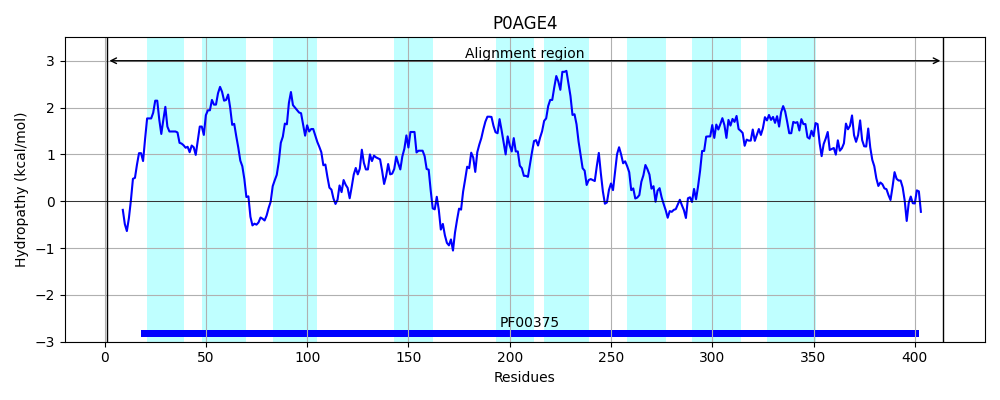
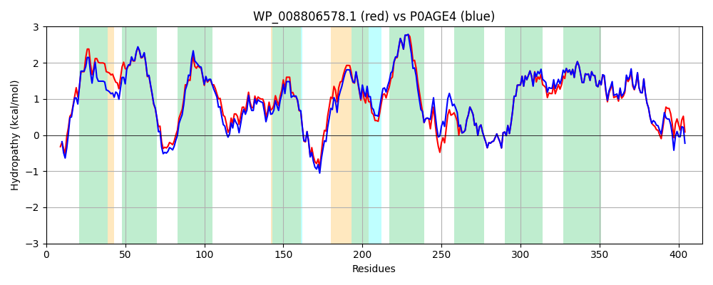

Hit Accession: P0AGE4
Hit TCID: 2.A.23.1.13
Hit Description: gnl|BL_ORD_ID|8859 gnl|TC-DB|P0AGE4|2.A.23.1.13 Inner membrane symporter ygjU - Escherichia coli.
Mach Len: 415
e:0.000000
Query TMS Count : 9
Hit TMS Count: 9
TMS-Overlap Score: 9.200000
Predicted Substrates:None
BLAST Alignment:
Score: 1820 , Bit scores: 705 bits, E-value: 0.0e+00, Alignment length: 415, Percentage identity: 87
Query: 1 MTTRTPPSGWISRLAQGSLVKQILIGLVLGVLLALVSKPTAIAVGLLGTLFVGALKAVAPVLVLMLVMASIANHQHGQKTSIRPILFLYLLGTFSAALTAVLFSFVFPSTLHLTTAADSITPPSGIVEVLRGLLMSMVSNPIDALLNANYIGILVWAVGLGFALRHGNDTTKNLINDVSHAVTFIVKVVIRFAPLGIFGLVSSTLATTGFETLWGYAQLLLVLVGCMLLVALVINPLLVFWKIRRNPYPLVLTCLRESGVYAFFTRSSAANIPVNMALCEKLNLDRDTYSVSIPLGATINMAGAAITITVLTLAAVHTLNIPVDLPTALLLSVVASLCACGASGVAGGSLLLIPLACNMFGIPNDVAMQVVAVGFIIGVLQDSCETALNSSTDALFTAAACIAEDDQLAKNALRS 415
MTT+ P G RLA GSLVKQIL+GLVLG+LLA +SKP A AVGLLGTLFVGALKAVAP+LVLMLVMASIANHQHGQKT+IRPILFLYLLGTFSAAL AV+FSF FPSTLHL+++A I+PPSGIVEV+RGL+MSMVSNPIDALL NYIGILVWA+GLGFALRHGN+TTKNL+ND+S+AVTF+VK+VIRFAP+GIFGLVSSTLATTGF TLWGYAQLL+VLVGCMLLVALV+NPLLV+WKIRRNP+PLVL CLRESGVYAFFTRSSAANIPVNMALCEKLNLDRDTYSVSIPLGATINMAGAAITITVLTLAAV+TL IPVDLPTALLLSVVASLCACGASGVAGGSLLLIPLACNMFGI ND+AMQVVAVGFIIGVLQDSCETALNSSTD LFTAAAC AEDD+LA +ALR+
Sbjct: 1 MTTQRSP-GLFRRLAHGSLVKQILVGLVLGILLAWISKPAAEAVGLLGTLFVGALKAVAPILVLMLVMASIANHQHGQKTNIRPILFLYLLGTFSAALAAVVFSFAFPSTLHLSSSAGDISPPSGIVEVMRGLVMSMVSNPIDALLKGNYIGILVWAIGLGFALRHGNETTKNLVNDMSNAVTFMVKLVIRFAPIGIFGLVSSTLATTGFSTLWGYAQLLVVLVGCMLLVALVVNPLLVWWKIRRNPFPLVLLCLRESGVYAFFTRSSAANIPVNMALCEKLNLDRDTYSVSIPLGATINMAGAAITITVLTLAAVNTLGIPVDLPTALLLSVVASLCACGASGVAGGSLLLIPLACNMFGISNDIAMQVVAVGFIIGVLQDSCETALNSSTDVLFTAAACQAEDDRLANSALRN 414 | Protein Hydropathy Plots: |
|---|
|  |  |
Pairwise Alignment-Hydropathy Plot:
|
|---|
|  |